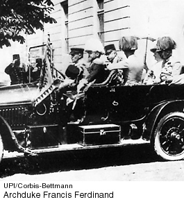

3. The assassination of Archduke Francis Ferdinand (1914)
The event that began World
War I (1914-1918) symbolizes the altered shape of the dispensing powers
in modern Europe, from the older royal and aristocratic families to
the newer professional and material elites of the postwar period. After
the war ended, writers turned their attention to the decline of aristocratic
society and to the new emerging orders of Europe and America.

More information:
|

Michael Seidel
is a Professor in the
Department of English and Comparative Literature at Columbia University. His Top
10 list reflects a broad historical approach. He also discusses the impact of
the great events on writers, artists, and humanity in general.
|